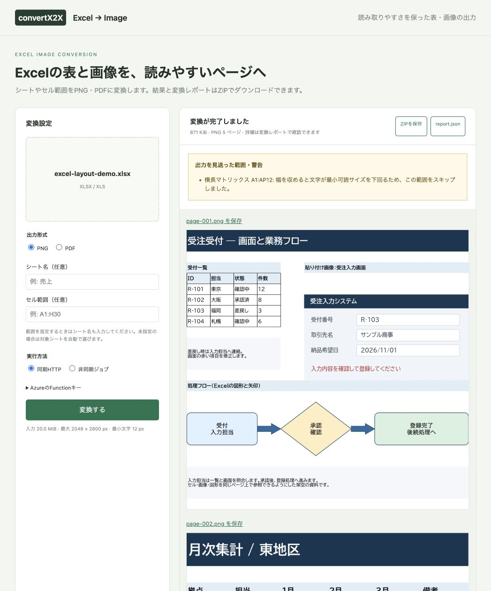

Excel → 画像・PDF
画像と図形があるExcelを、そのまま描画。
架空の業務資料を実装済みの変換処理でPNG・PDFへ変換しました。入力ファイルと変換結果をダウンロードして比較できます。
画像付き業務フローが1ページ、2つの印刷範囲が2ページ、縦長一覧が2ページ。42列の横長マトリックスは可読性の閾値を満たさず見送りとなります。
入力と結果
元のExcel
4シート・日本語・結合・画像・図形を含むXLSX。
PNGとreportのZIP
実際の変換結果。5ページと範囲別の記録。
変換後のPDF
PNGと同じ配置。セル文字には検索用の文字層があります。
PDFとreportのZIP · PNGのreport.json · PDFのreport.json
セル・画面画像・業務フロー
左側の受付一覧と説明はセル、右側の画面は貼り付けPNG、下段はExcelの基本図形です。各要素を同じシート座標から描画しています。Excelそのものによる印刷結果ではなく、このAPIが生成したPNGです。

Playgroundからの実行
同期HTTPで同じExcelを送信した画面です。5ページのプレビューと、横長マトリックスを見送った理由を表示します。PDF出力ではPDF保存リンクとプレビューの案内を表示します。



2つの印刷範囲
同一シートに設定したA1:F12とA18:F29を個別のページにします。間にある空白行をまとめて1ページへ縮小しません。


縦長一覧
125行の一覧は縦方向だけを2ページに分割します。1〜70行と71〜125行が連続しており、横方向の列は全て同じページに残します。


読めないほど横長の範囲
42列のマトリックスは、幅2048pxに収めると文字サイズが既定12pxを下回ります。生成対象から外し、次の内容をreportへ記録します。
{
"sheet": "横長マトリックス",
"range": "A1:AP12",
"selection": "occupied",
"status": "skipped",
"reason": "WIDTH_UNREADABLE",
"message": "幅を収めると文字が最小可読サイズを下回るため、この範囲をスキップしました。",
"pages": []
}他シートは生成できるため全体は部分成功です。このシートだけを指定した場合は422 NO_RENDERABLE_RANGEになります。実際のエラー詳細も掲載しています。
追加1：横に広い表
24列の表を横方向に縮小する例です。複数行の見出しや結合、明細の位置を保って描画します。同じExcelに48列の表も含め、広すぎる範囲の見送りも確認します。
| 追加サンプル | 実際のPNG出力 | 結果 |
|---|---|---|
| 横に広い表 | 2048 × 787px・1ページ | 24列を描画。48列の比較用シートは見送り |
| 画像を含むシート | 1733 × 1824px・1ページ | 貼り付け画像3枚とセルを描画 |
| 横長の表と画像 | 2048 × 1098px・1ページ | 27列幅の範囲に表と画像2枚を描画。52列の比較用シートは見送り |
PDFもそれぞれ1ページです。PDF内のページ画像がPNGと一致することを確認しています。比較用の過大シートだけを指定した実際のエラー応答：48列・52列。
元のExcel · 変換後PNG（元サイズ） · 変換後PDF · PNGとreportのZIP · 変換レポート

追加2：画像を含むシート
文字を含む画面画像、模式図、グラフ画像をセルの説明と一緒に配置しています。グラフはPNGとして貼り付けたもので、Excelのネイティブグラフではありません。
元のExcel · 変換後PNG（元サイズ） · 変換後PDF · PNGとreportのZIP · 変換レポート

追加3：横長の表と画像
横長の表の隣に画面画像とグラフ画像を配置し、表と画像を同じページへ描画します。さらに広いシートは、画像を含む範囲全体を見送ります。
元のExcel · 変換後PNG（元サイズ） · 変換後PDF · PNGとreportのZIP · 変換レポート

追加サンプルは最大横幅2048px・最小セル文字サイズ12pxの既定設定を使用しています。画像内の文字にはこの閾値の検査は適用されません。リクエスト・結果・実測時間の記録と再実行手順も保存しています。
再現方法と範囲
入力は全て架空の内容で、外部画像や実在の業務ファイルは使用していません。最初の4シートのサンプルはfunctions/excel2img/scripts/CreateRenderDemo.javaで作成し、HTTP・Queueと同じExcelImageServiceをPNG／PDFのそれぞれで実行しています。追加3パターンの生成とHTTP変換は、上記の再実行手順を参照してください。
cd functions/excel2img
./mvnw package
java -Djava.awt.headless=true \
--class-path "target/classes:$(cat target/license-runtime-classpath.txt)" \
scripts/CreateRenderDemo.java ../../docs/APIDocs/excel2img/examples実行記録はrun.jsonにあります。時間はこのローカルサンプルの実測で、Functionsの起動時間やHTTP・Storageの転送を含みません。文字のサイズ・折り返し・図形の描画はExcelと差が出ます。用途に合うか、元ファイルと出力の両方で確認してください。